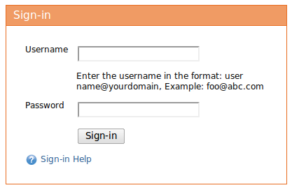
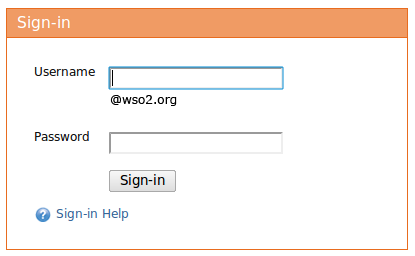

You can use this form to sign in to the WSO2 Cloud API Manager Admin Console.

Figure1: Sign In Form
| The Form Field | Description |
| Username | For this field you need to enter the username in the following format. yourname@yourdomain E.g. foo@wso2.com |
| Password | The Password of your user account |

Figure1: Sign In Form When accessed through https://apimanager.stratoslive.wso2.com/t/yourdomoain
| The Form Field | Description |
| Username | For this field you only need to enter the username as the domain name is already suggested for you. Note that derives the domain name from the url. So in case you want to login to an account in a different domain you have to change the url of the correct domain specific login and try entering the username and password. |
| Password | The Password of your user account |